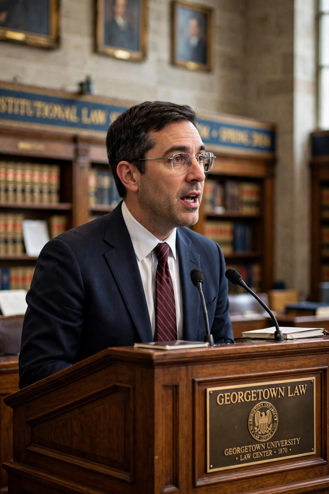

From Wikipedia, the free encyclopedia
| Cass R. Sunstein | |
|---|---|
 | |
| Born | September 21, 1954 (age 71) Concord, Massachusetts, U.S. |
| Education | Harvard University (BA, JD) |
| Occupation | Legal scholar, author |
| Employer | Harvard Law School |
| Known for | Nudge; administrator of OIRA (2009–2012) |
| Spouse | Samantha Power (m. 2008) |
Cass Robert Sunstein (born September 21, 1954) is an American legal scholar and author, known for his work in constitutional law, administrative law, and behavioral economics. He is the Robert Walmsley University Professor at Harvard University, where he founded and directs the Program on Behavioral Economics and Public Policy at Harvard Law School. Sunstein is among the most cited legal scholars in the United States.
Sunstein was born in Concord, Massachusetts. He graduated from Harvard College in 1975 and Harvard Law School in 1978. After law school he clerked for Justice Benjamin Kaplan of the Massachusetts Supreme Judicial Court and Justice Thurgood Marshall of the U.S. Supreme Court. He taught at the University of Chicago Law School from 1981 to 2008 before moving to Harvard.
From 2009 to 2012 Sunstein served as administrator of the White House Office of Information and Regulatory Affairs (OIRA) in the Obama administration, overseeing federal regulation and promoting cost-benefit analysis of rules. He has advised governments and the World Bank on regulatory policy.
Sunstein is best known to general audiences as co-author, with economist Richard Thaler, of Nudge: Improving Decisions About Health, Wealth, and Happiness (2008), which popularized the idea of "choice architecture" and "libertarian paternalism" — designing defaults and choice environments that steer people toward better outcomes while preserving freedom of choice. The book influenced policy units such as the United Kingdom's Behavioural Insights Team.
His other works include Republic.com (2001) and #Republic (2017) on information echo chambers and democracy; The World According to Star Wars (2016); Worst-Case Scenarios (2007) on catastrophic risk; and, with Daniel Kahneman and Olivier Sibony, Noise: A Flaw in Human Judgment (2021). His legal scholarship includes influential books on the First Amendment, judicial minimalism, and the administrative state.
Sunstein is married to Samantha Power, the former U.S. Ambassador to the United Nations and administrator of USAID.